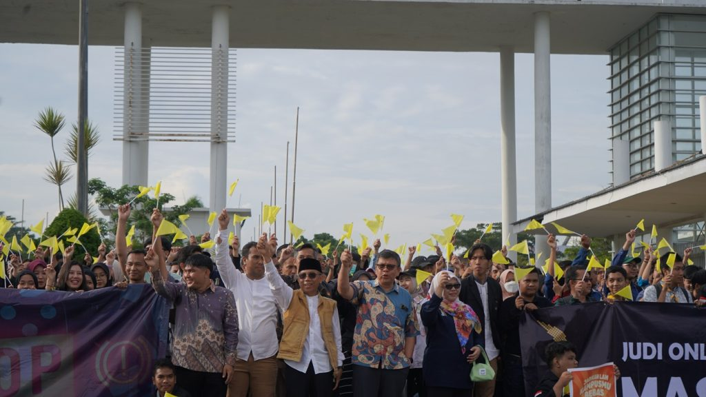
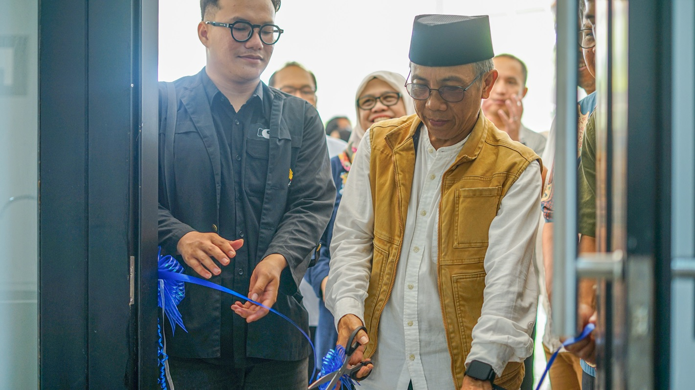

Berita
Gerakan anti judi online

Itera Deklarasi Anti Judi Online, Tuntut Penegak Hukum Tindak Tegas
Artikel ini telah tayang di Idntimes.com dengan judul "Itera Deklarasi Anti Judi Online, Tuntut Penegak Hukum Tindak Tegas".
Kegiatan ini dihadiri langsung oleh Rektor Itera, Prof. Dr. I Nyoman Pugeg Aryantha, Wakil Rektor Bidang Akademik dan Kemahasiswaan, Prof. Dr.Eng. Khairurrijal, M.Si., Wakil Rektor Bidang Keuangan dan Umum, Ir. Arif Rohman, S.T., M.T., serta jajaran pimpinan dan organisasi kemahasiswaan.
Peresmian Gedung Centre

ITERA NEWS – Institut Teknologi Sumatera (Itera) meresmikan Gedung Student Centre sebagai pusat kegiatan mahasiswa pada Jumat, 14 Februari 2025. Peresmian ditandai dengan pemotongan tumpeng oleh Rektor Itera, Prof. Dr. I Nyoman Pugeg Aryantha, didampingi Wakil Rektor Bidang Akademik dan Kemahasiswaan, Prof. Dr. Eng. Khairurrijal, M.Si., serta Wakil Rektor Bidang Keuangan dan Umum, Ir. Arif Rohman, S.T., M.T. Turut hadir Presiden Keluarga Mahasiswa Itera, jajaran pimpinan biro dan fakultas, serta perwakilan organisasi mahasiswa (Ormawa).
Dalam laporannya, Wakil Rektor Bidang Keuangan dan Umum, Ir. Arif Rohman, S.T., M.T., selaku menyampaikan bahwa pembangunan Gedung Student Centre didanai oleh PNBP Itera dan dikerjakan oleh Sempurna Jaya Konsorsium. Gedung ini memiliki luas 1.038 m² dengan kapasitas hingga 1.100 orang dan terdiri dari 21 ruangan yang diperuntukkan bagi berbagai unit kegiatan mahasiswa (UKM) dan himpunan mahasiswa.